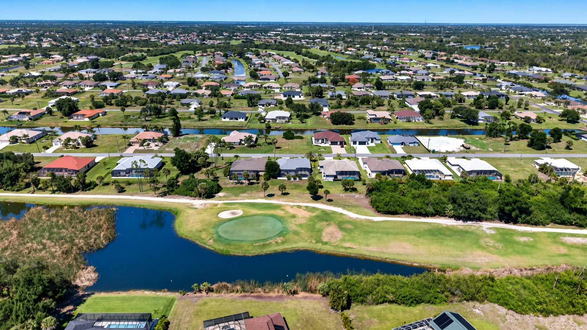
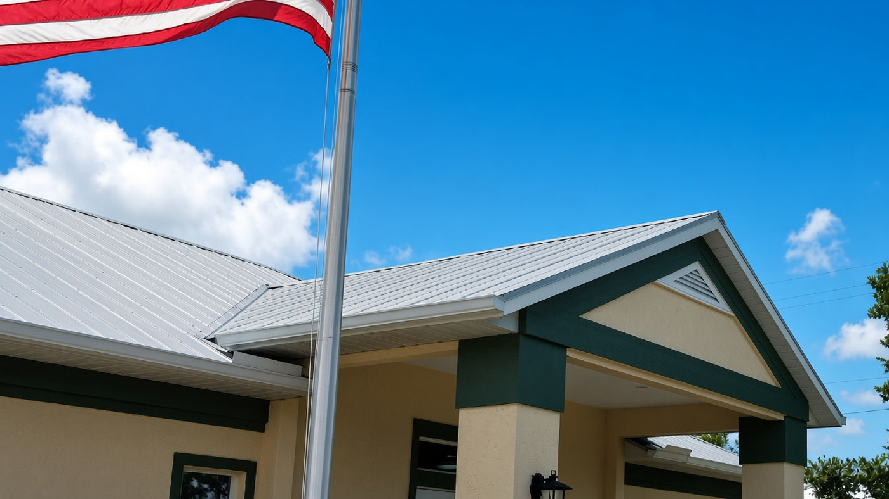
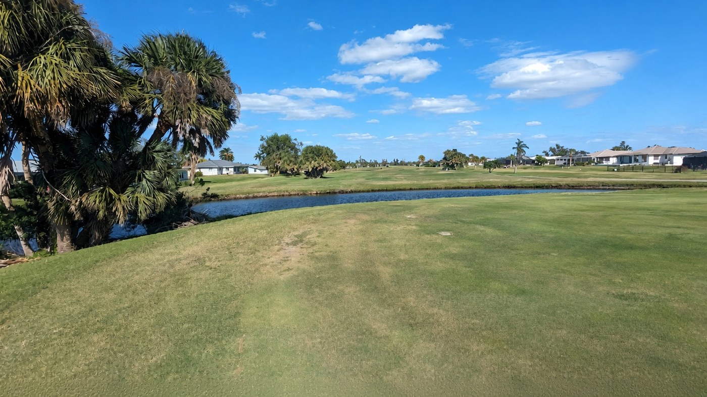

Draft preview for review. Not published. Images shown from local copies.
Living in Rotonda West, FL
Rotonda West is easy to spot from the air: a planned community laid out around a circle, ringed by golf courses on the Cape Haze peninsula.
It sits in western Charlotte County near the Sarasota County line, with Rotonda West addresses in ZIP 33947. Here is the short guide we give buyers: what the community is, how the association works, the golf and the water, the schools, and the questions to ask before you buy.
10,352
residents in the Rotonda area, ACS 2020-2024
68.2
median age. The county is 59.9
27.2%
of housing units are seasonal. County 15.7%
$389,400
median owner-reported home value
Source: U.S. Census Bureau ACS 2020-2024, Rotonda CDP; ACS, Charlotte County.
The Census Bureau's Rotonda census-designated place is the closest statistical match for Rotonda West. Owner-reported values are survey estimates, not sale prices.

Rotonda West from the air, with its circular street pattern and fairways.
The community
A planned community with a long history of lot sales.
Rotonda West is a planned community on the Cape Haze peninsula. The land was part of a cattle ranch bought by the Vanderbilt brothers in 1952, and in 1969 the remaining land was sold to the developer that became Cavanagh Communities Corporation, which launched Rotonda West. Its circular core and many still-vacant platted lots date from that era.
That history explains a common sight: finished streets next to mowed vacant lots. Our post Homes for sale in Rotonda West: 6 questions to ask before you buy goes deeper on lots, building, and resale.
Source: Rotonda West Association, Early Facts.
The association
Mandatory, modest, and worth reading closely.
Rotonda West Association, Inc. is the community's property-owner association, and its yearly assessment is mandatory for lot owners. The association published $190 per lot for 2024. It mows vacant lots, roughly 1,600 to 2,000 of them about six times a year according to its FAQ, and enforces deed restrictions. Ask for the current assessment and the deed restrictions before you buy.

The Rotonda West Association office on Rotonda Circle.
Source: Rotonda West Association, FAQ.
Golf and water
Better known for golf than for Gulf-access boating.
The Englewood Area Chamber of Commerce lists five Rotonda Golf and Country Club courses: Hills, Links, Long Marsh, Palms, and Pinemoor. Many Rotonda West homes sit on fairways, lakes, ponds, or canals. A view of water is not the same as boat access to the Gulf, so ask what kind of water a listing means.
Golf
Hills, Links, Long Marsh, Palms, and Pinemoor. Ask about course ownership and any membership terms on golf-front lots.
Ask for
Club documents
Water view
Pretty, and great for a lanai. Not a route to the Gulf.
Ask
Is it boatable at all?
Canals
Docks and seawalls on some streets. If true Gulf access is the goal, compare with South Gulf Cove.
Ask
Where the canal leads
Source: Englewood Area Chamber of Commerce, golf courses.

A Rotonda West fairway and pond.
Schools
Three A schools on the west side of the county.
Vineland Elementary and L.A. Ainger Middle, both with Rotonda West addresses, earned an A for 2025-26, and L.A. Ainger posted the highest percent of possible points of the county's district middle schools. Lemon Bay High School in Englewood also earned an A. Schools are assigned by boundary, so check the exact address.
| School | Grade | Address area |
|---|---|---|
| Vineland Elementary | A · 65% of points | Rotonda West 33947 |
| L.A. Ainger Middle | A · 71% of points | Rotonda West 33947 |
| Lemon Bay High School | A · 68% of points | Englewood 34224 |
Source: Florida Department of Education, 2025-26 School Grades; NCES school directory.
See every grade in the county in our Charlotte County schools guide.
Before you buy
The answers live in documents, not listing remarks.
Before buying in Rotonda West, ask whether neighboring lots are vacant and buildable, get the current association assessment and deed restrictions, confirm what kind of water the home is on, and check the FEMA flood zone and insurance cost. If the home will be your primary residence, plan to file homestead by March 1.
Vacant neighbors can be built on. Ask whether adjoining lots are owned by the seller, a neighbor, or an investor.
Get the current assessment, the budget, and the deed restrictions, and read them like the contract they are.
Hurricane Ian made a second landfall near Punta Gorda in 2022. Check the flood zone for the exact address and get a quote early.
Own and live in the home on January 1, file by March 1, and note what Amendment 3 changes in 2027. See our homestead guide.
Source: NHC, Hurricane Ian report; Florida Department of Revenue, PTO 26-21.
Thinking about building instead? Read land for sale in Punta Gorda: 8 steps from lot to build, which also covers Rotonda West lots. Moving from out of state? Start with our Moving to Punta Gorda relocation guide.
FAQs
Where is Rotonda West, FL?
Rotonda West is a planned community on the Cape Haze peninsula in western Charlotte County, near the Sarasota County line. Its schools and many homes use Rotonda West addresses in ZIP 33947.
How many golf courses are in Rotonda West?
The Englewood Area Chamber of Commerce lists five Rotonda Golf and Country Club courses: Hills, Links, Long Marsh, Palms, and Pinemoor.
Is there an HOA in Rotonda West?
Yes. Rotonda West Association, Inc. is the community's property-owner association, and its yearly assessment is mandatory for lot owners. It published $190 per lot for 2024, so ask for the current amount.
What schools serve Rotonda West?
Vineland Elementary and L.A. Ainger Middle, both with Rotonda West addresses, earned an A for 2025-26, as did Lemon Bay High School in Englewood. Check the district boundary maps for any specific address.
Is Rotonda West waterfront?
Many homes sit on fairways, lakes, ponds, or canals, but a water view is not the same as boat access to the Gulf. Ask what kind of water a listing means and whether a boat can reach the Gulf from it.
Looking at Rotonda West?
We will help you sort golf lots from canal lots and buildable neighbors from protected views. Call or text The Helgemo Team at (941) 770-2275.